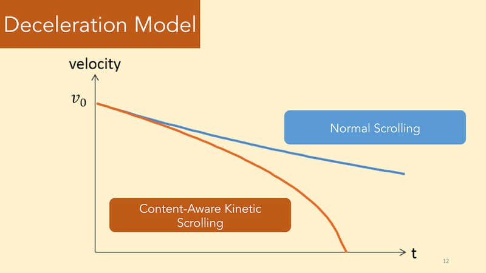
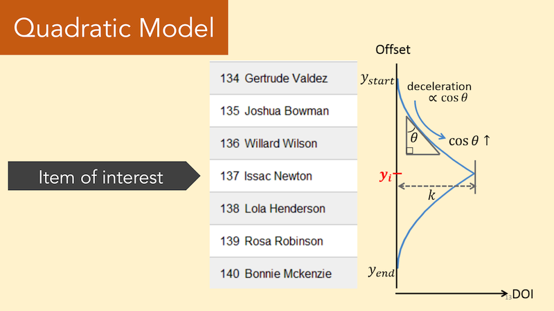

Additional deceleration is applied after the user flicks the touch screen with a finger.
Quadratic deceleration model: content-aware kinetic scrolling adds a virtual hill that slows down the scroll head, whose deceleration is maximized at the peak of the hill.
Please open these pages from a touchscreen device.
Example web pages with social wear applied: